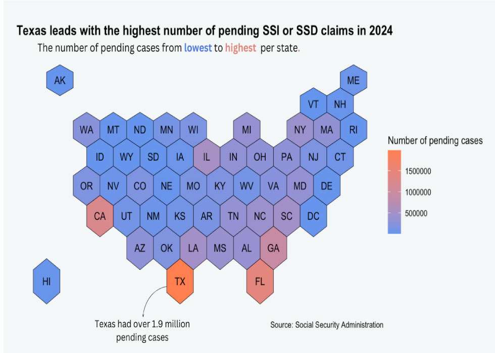
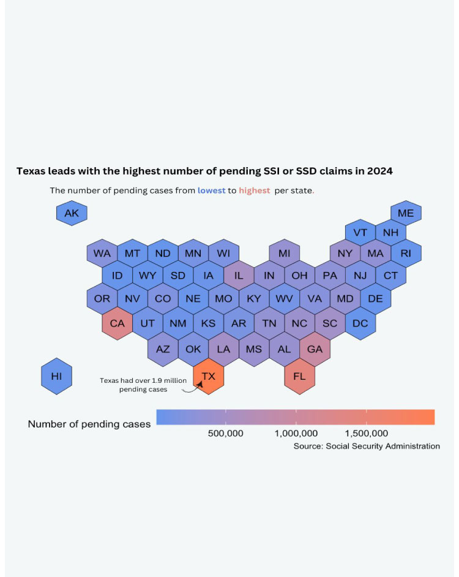

Suzzie Olvera took just her backpack and laptop the first time she went to go see him ten years ago.
Olvera didn't return back home until a year later, when she ran away. A survivor of human trafficking, Olvera had crossed the border from Mexico to the U.S and gave birth to her first child in April 2017.
Olvera escaped, but it also meant carrying the immense trauma of being abused, both from growing up and from the abusive relationship. From hallucinations to severe PTSD and depression, Olvera was seeking medical help for her mental health and applied for Social Security Insurance in 2019.
She didn't receive it till 2021.
As a new mom, Olvera said those three years “sucked.” Maggots would get on her dishes because her disability prevented her from being able to wash the dishes.
In the last 25 years less pending cases increased by X% since 2000. Texas, where Olvera lives with her three children, had the highest number of pending cases in 2024, surpassing 1.9 million.


